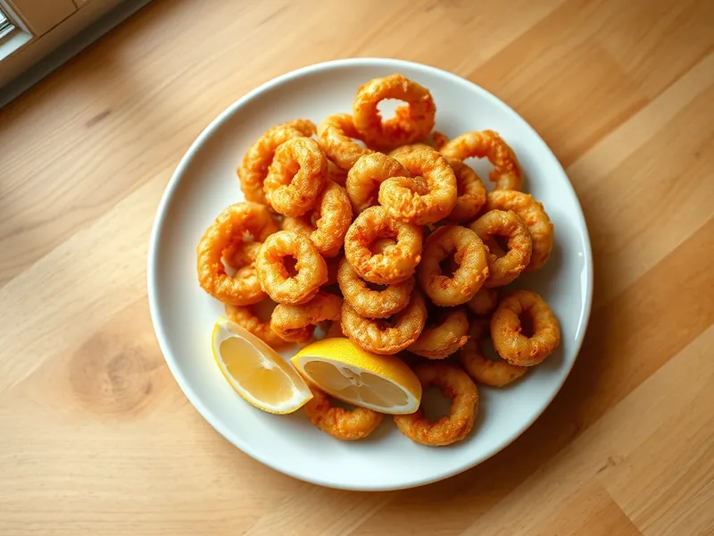

Кольца кальмаров в кляре
Хрустящие кольца кальмаров в пивном или минеральном кляре
25 мин3 порц.488 ккал на порциюБ 36 · Ж 26 · У 27Интернациональная кухня
Открыть в приложении: порции, таймеры, список покупок
Продукты на 3 порц.
- Кальмар500 г
- Мука пшеничная0,5 стак.
- Яйцо куриное1 шт
- Вода120 мл
- Растительное масло60 мл
- Лимон по желанию0,5 шт
- Паприка0,5 ч. л.
- Соль2 щеп.
Как готовить
- Очистите тушки кальмара от плёнки и хорды, обсушите и нарежьте кольцами шириной 1 см.
- Взбейте яйцо с холодной водой, солью и паприкой, всыпьте муку и перемешайте до густоты сметаны.
- Разогрейте масло слоем 1-1,5 см на сковороде на среднем огне.
- Обмакивайте кольца в кляр и жарьте партиями по 1-1,5 минуты с каждой стороны до золотистого цвета.
- Выложите на бумажное полотенце и подавайте с дольками лимона.
Совет. Хорошо обсушите кольца перед кляром, иначе он стечёт, а масло будет брызгать.